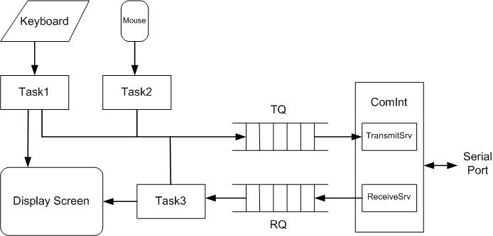

Machine Problem 5: Battleship via Serial Port
| Assigned |
Tuesday, 26 October 2004 |
| Due Date |
Friday, 12 November 2004, 5:00 p.m. |
| Purpose |
To understand graphics and asynchronous
serial communication. To work in teams. |
| Points |
60 |
Now all of the communications plugs the physical link, the
RS232 connector, is the simplest. I think it was discovered in
the ruins at Pompeii -- the Romans probably used it to interface
with their data runners. It specifies voltages (plus and minus)
which are prehistoric. It even predates TTL. But it is all there
is. When forced back to bare copper and elemental, ASCII
transmission, RS232 is always there, and we should be thankful,
because in the intricacies of the higher layers of communications
protocol lies a tower of Babel -- virtual plugs misted in
indescribable complexity.
-- Robert W. Lucky, Lucky Strikes Again, 1993.
Working in a team, you will write a single program MP5 that implements a
version of the classic game Battleship
over the serial port. When MP5 is run on two computers whose serial ports
are connected, each player can fire at the other's ships in turn, and
each player can type messages to the other player.
Files for MP5 are on the V: drive in the directory V:\ece291\mp5.
In this directory are the program framework mp5.asm and a
running version of the program mp5lab.exe. Lab versions of subroutines
are in libmp5.lib, which contains all subroutines of LIB291 plus
libInit, libReceiveSrv, libTransmitSrv, libTask1, libTask2, libTask3,
libSetFleet, and libCircle. You will use mp5xit instead of dosxit.
You should start by copying these files to your home directory with the following command:
xcopy /s V:\ece291\mp5 W:\mp5
You may download the files from the server as
mp5.zip
Reading: Lab Notes, Chapter 12
Program Specification
Two copies of the program run on separate computers connected by a null modem cable.
One player sits at each computer. When the program starts, it first asks whether the
initial state is firing (1) or waiting (2). The player at one computer should enter 1, and
the player at the other computer should enter 2.
The program then prompts the player for a radius, in pixels, for circles that will be displayed.
Next, the program displays two square grids; each grid has 10 cells on each side.
On the left is the fleet grid, and on the right is the target grid.
The program interacts with the player to set the positions of five ships on
the fleet grid. The ships are a carrier (5 cells), battleship (4 cells),
destroyer (3 cells), submarine (3 cells), and patrol boat (2 cells).
For each ship, the program asks the player to click first on the top or
leftmost cell of the ship, and then to click on the bottom or rightmost cell of the ship.
The second cell must create a ship with the correct length.
The program rejects mouse clicks outside the fleet grid and clicks on already occupied cells.
After the ships are placed, players take turns firing shots.
The first player clicks on a cell in the target grid.
The shot is displayed on the corresponding cell of the second player's fleet grid.
If the shot hits a ship, then it is displayed as a filled red circle.
If the shot misses, then it is displayed as a filled white circle.
A circle of the same color appears in the target grid cell that the first
player had chosen.
Then the second player may fire a shot by clicking on a cell in the target grid,
with similar effects.
The program rejects mouse clicks outside the target grid.
At any time, a player may send a text message to the other player.
The typed message appears one one line at the top of the display,
and the player may use the backspace key to correct errors.
When the player presses the Enter key, the message is transmitted to the other player,
and it appears at the bottom of the other player's display.
When a player presses the ESC key, the program exits.
Program Organization
In this machine problem, the main procedure is provided for you.
You must write the code to replace the library subroutines
libInit, libReceiveSrv, libTransmitSrv, libTask1, libTask2, libTask3,
libSetFleet, and libCircle.
You will replace these subroutines from the libmp5 library by deleting the
statements that call the libmp5 subroutine and by adding your own code.
Each subroutine that you write should match the output of the library
subroutine exactly.
You may use parts of your team members' subroutines for MP4, such as
Enq and Deq.
The program uses the following global variables:
SavCOff RESW 1 ; Serial communication port vector
SavCSeg RESW 1
State DB 1 ; 1 = firing, 2 = waiting for other side
Radius DW 3 ; Radius of circles, 2 to 6
Fleet RESB 100 ; 10x10 array of fleet locations
ShotRow RESB 1 ; Grid row of last shot by user, 0 to 9
ShotCol RESB 1 ; Grid column of last shot by user, 0 to 9
There are also parameter lists for the
Transmit Queue (TQList) and the Receive Queue (RQList).

The program operates in 320x200 graphics mode, with 200 pixel rows and 320 pixel columns.
The fleet grid occupies pixels in rows 30 to 169 and columns 10 to 149.
The target grid occupies pixels in rows 30 to 169 and columns 170 to 309.
Each cell in each grid is a 13x13 square of green or blue color.
In each grid, there is a single row of black pixels above and to the left of each cell.
So in the fleet grid, the pixels in row 30 and in column 10 are black;
the top left cell of this grid actually occupies pixels in rows 31 to 43 and columns 11 to 23.
Each cell on the grid has a grid row numbered from 0 to 9 and a grid column
from 0 to 9. The top left cell of each grid is at grid row 0 and grid
column 0. The (r,c) entry of the Fleet array is 0 if the cell
at grid row r and grid column c of the fleet grid is unoccupied,
or 1 if that cell has a segment of a ship.
For text, the screen behaves as if there are 25 text rows and 40 text columns.
To display text on the screen, use INT 10h to move the cursor to the appropriate column of
row 0 (outgoing text) or row 23 (incoming text).
Then call dspout or dspmsg to display a character or an entire message.
The program uses INT 33h with AX = 3 to determine whether
the player has pressed a mouse button.
The INT 33h instruction retrieves the position of the tip of the mouse cursor arrow.
The position is given in pixels for the row (in DX) and column (in CX).
The row value is 0 to 199, but column value is in 0 to 639; divide the column value
by 2 to get number of pixels in 320x200 mode.
After the program determines that the player has pressed a mouse button,
the program should wait for the mouse button to be released before
proceeding.
Packets are transmitted over the serial port between computers in three formats.
In each format, the last character is EOT, which in this program is 0FFh.
(Some standard packet formats use 04h, but we cannot do so here. Why not?)
- Format 1: This format is used for shots. The first byte is 01h, the second byte
is the grid row of the shot (00h to 09h), the third byte is the grid column of the
shot (00h to 09h), and the fourth byte is the EOT character.
- Format 2: This format is used to report whether the shot was a hit or a miss.
The first byte is 02h, the second byte is 00h for a miss or 01h for a hit, and
the third byte is the EOT character.
- Format 3: This format is used for text messages exchanged between players.
The first byte is 03h, the subsequent bytes are ASCII characters (up to 40
characters), and the last byte is the EOT character.
You may use without penalty the following subroutines, which are provided
in the mp5.asm program framework.
- EnableTI -- Enable ready-to-transmit interrupts from the 8250 ACE
- DisableTI -- Disable ready-to-transmit interrupts from the 8250 ACE
- SerialInit -- Initialize the 8250 ACE with the baud rate and frame format
- SerialReset -- Reset the 8250 ACE, disabling its interrupts
- ComInt -- Part of interrupt service routine for serial communication port
Your team will replace each of the subroutines listed below with your own code.
Document each subroutine with a header.
| Init |
- Initializes interrupt vectors and the display screen
- Inputs: None
- Outputs: SavCOff, SavCSeg, Fleet
- Calls: SerialInit
-
Init saves the old serial communication port interrupt vector and changes
it to point to the interrupt service routine ComInt. Init uses
INT 10h to select 320x200 graphics mode and draws the fleet grid
and the target grid.
Init uses INT 33h to initialize the mouse driver and to display
the mouse cursor.
Init initializes the Fleet array.
|
| ReceiveSrv |
- Receives one byte through serial port
- Inputs: None
- Outputs: None
- Calls: Enq
-
ComInt, the interrupt service routine for the serial communication port,
calls ReceiveSrv, which receives one byte from the serial port and enqueues it
onto the Receive Queue.
|
| TransmitSrv |
- Receives one byte through serial port
- Inputs: None
- Outputs: None
- Calls: Deq, DisableTI
-
ComInt, the interrupt service routine for the serial communication port,
calls TransmitSrv.
If the Transmit Queue is not empty, then TransmitSrv dequeues
dequeues a byte from this queue and uses the OUT
instruction to send it to the THR register in the 8250 ACE.
If the Transmit Queue is empty, then TransmitSrv calls DisableTI.
(Why should TransmitSrv call DisableTI?)
|
| Task1 |
- Processes keyboard character
- Inputs: None
- Outputs: TQ
- Calls: kbdin, dspout, Enq, EnableTI, SerialReset, mp5xit
-
Task1 first uses INT 16h to determine whether the player has pressed a key.
If so, then Task1 calls kbdin to obtain the ASCII code for the keyboard character.
- Unless the character is special,
if the current unsent message is fewer than 40 characters long, then Task1 saves
the new character and displays it on the screen.
- If the character is a backspace and there is a character to erase, then Task1 erases
the last character of the current unsent message.
- If the character is a carriage return (from the Enter key), then Task1 sends a Format 3
packet via TQ with the current message.
Finally, Task1 calls EnableTI to enable serial port transmit interrupts.
- If the character is ESC (from the Esc key), then Task1 restores the serial port interrupt vector,
calls SerialReset to reset the serial port, and calls mp5xit.
|
| Task2 |
- Handles mouse inputs
- Inputs: State
- Outputs: ShotRow, ShotCol, TQ
- Calls: Enq, EnableTI
-
Task2 exits if State is 2 or if the mouse has not been clicked.
If State is 1 and the player has clicked the mouse,
then Task2 checks that the mouse cursor position is in the target grid.
Task2 saves the grid row and grid column of the mouse cursor in memory
variables ShotRow and ShotCol respectively.
Task2 sends a Format 1 packet via TQ with the shot information
and calls EnableTI to enable serial port transmit interrupts.
Finally, Task2 sets State to 2.
|
| Task3 |
- Handles received bytes from the serial port
- Inputs: ShotRow, ShotCol, RQ
- Outputs: State, TQ
- Calls: dspmsg, Enq, Deq, EnableTI
-
Task3 checks the RQ to determine whether the program has received bytes from the serial port.
Once an EOT has arrived, Task3 processes the entire packet.
- For a Format 1 packet, Task3 updates the display on the fleet grid and sends a Format 2 packet
to the other player with information about a hit or a miss.
Task3 also sets State to 1.
- For a Format 2 packet, Task3 updates the display on the target grid.
- For a Format 3 packet, Task3 erases the previous message from the other player
and displays the new message.
|
| SetFleet |
- Interacts with the player to set the positions of the ships
- Inputs: None
- Output: Fleet
-
SetFleet interacts with the player to set the position of each of five ships.
For each ship, SetFleet prompts the player to choose the top or leftmost cell
for the ship, and then the bottom or rightmost cell.
After the player has selected the first cell, it is shown in one color,
and after the player has selected the second cell of the ship, all segments
of the ship are displayed in a different color.
The lab version mp5lab.exe uses yellow for the first cell and gray for all
segments of the ship.
For each cell occupied by a ship segment, SetFleet sets the corresponding
entry of the Fleet array to 1.
|
| Circle |
- Draws a filled circle using Bresenham's algorithm
- Inputs:
- SI -- column of center of circle
- DI -- row of center of circle
- Radius -- radius of circle
- DL -- Color
- Outputs: None
-
Circle draws a circle of radius Radius centered at column SI,
row DI, on the screen with the color specified by DL. The entire
interior of the circle should be filled with this color.
|
Optional Features
- You may choose your own colors and shapes for the ship segments.
- You may keep and display a score.
- You may display an appropriate message when all of one player's ships
have been sunk.
Working in Teams
- Find an equitable division of subroutines among team members.
For each subroutine, one student could be the primary developer and
another student could be the primary tester.
All students should inspect code written by other team members
- For each team meeting, one student should serve as the manager, and
another as the recorder; these roles should rotate so that every student has a
chance to fill each role.
- The manager is responsible for finding a time and place
for the meeting. Substantial time will be allocated in during at least one lecture
period each week for team meetings. Grainger Library has rooms specifically
designated for group meetings.
At the meeting, the manager should encourage everyone to
participate, ensure that all alternatives are adequately considered,
and keep discussions on task and on time.
- The recorder is responsible for
taking notes, summarizing the decisions in an e-mail to all team members, and
(for the Final Project) drafting the short document due that week.
- Team members should strive to be professional and civil to each other.
Disagreements should be based on facts and technical arguments, not on personal
prejudices.
- At the first meeting, on October 28, all teams will formulate a team charter.
Guidelines for the team charter will be distributed in class on October 28.
Friendly Advice
- The libmp5.lib file contains executable library subroutines for each of
the routines that you need to implement. The library subroutines allow
you to run the program and understand how it works before you implement it.
You can test your program with any combinations of your own code and library
subroutines. You will receive credit only for the subroutines that
you implement yourselves.
- You may define new memory variables as needed. Task1 can use an internal
buffer for the unsent message, and Task3 can use an internal buffer for
part of a packet.
- You may design and implement additional subroutines. In particular,
the SetFleet subroutine can be implemented with subroutines that perform
smaller tasks.
- Each subroutine should save and restore any registers that it uses,
except for registers that deliver subroutine outputs. The caller
may use registers without outputs and expect them to remain unchanged.
- Each interrupt service routine must save and restore registers that it uses,
possibly including DS.
- Think carefully about which parts of the program should be critical sections.
- When drawing a ship segment or a circle on the screen, first hide the mouse
cursor, draw the shape, and then display the mouse cursor again. This maneuver
will prevent the mouse cursor from blocking the display of the shape.
- To simulate the serial port on one computer, during development of MP5,
you may write a subroutine Port
that dequeues a byte from the Transmit Queue TQ(provided that this queue is nonempty)
and enqueues this byte onto the Receive Queue RQ.
- After MP5 terminates, if the DOS window fills the whole screen, use Alt-Enter
to return to a normal size window.
- Monitor the Web Board for clarifications and help.
- START EARLY!
Demonstration, Documentation, and Grading
Demonstrate your program to an ECE 390 staff member, who may use mp5lab.exe
on one of the two connected computers.
Although each team will develop one program, each submission will be
individual, as in previous MPs. You will also submit confidential peer evaluations.
As before, keep an MP development log and write an individual cover memo,
which you should submit with the program after the demonstration.
The cover memo should address the following questions (not the same as for previous
MPs):
- How much time did you spend on this MP, including team meetings,
planning and design, and debugging?
- What went well in your work on this MP? What did not?
- What did you learn about working in teams?
- How did you benefit from other team members?
- How did other team members benefit from you?
- What changes will your team make in its work practices for the Final Project?
(Your team will be asked to consider whether its team charter should be
revised.)
Your program will be graded according to the clarity of your design
and the quality of your documentation.
Gradesheet:
Functionality: 30 points
Style and documentation: 6 points
Cover memo: 4 points
Peer evaluations: 20 points
Peer evaluations:
Each student will submit a confidential evaluation of each other
member of the team. The evaluation will give 3, 2, 1, or 0 points
for Excellent, Good, Fair, or Poor performance on each of the four
primary criteria: quality, quantity, timeliness, and cooperation.
Although an evaluation has a total of 12 possible points, the maximum
evaluation score will be 10; thus a student who is Excellent on two criteria
and Good on two criteria will receive a score of 10. In a team of four, for each
student, the lowest peer evaluation score will be dropped, and the remaining
two scores will be summed for a maximum of 20 possible points.
In a team of three, for each student, the lower of the two peer
scores will be dropped, and the remaining score will be
added with 10, for a maximum of 20 possible points.
mp5.asm (program framework)
|